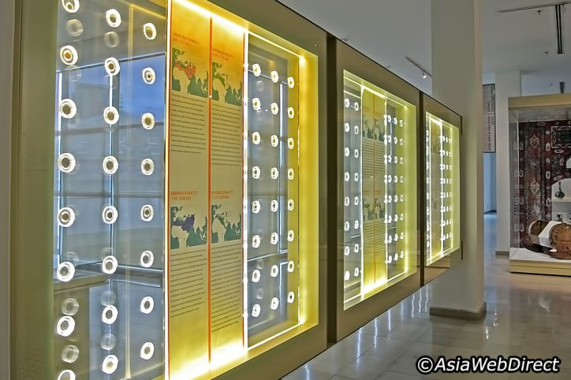
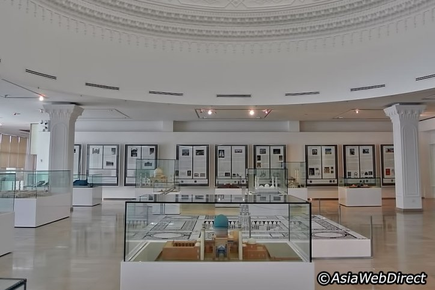

The Islamic Arts Museum Malaysia is one of Kuala Lumpur’s most popular attractions, and well-regarded as Southeast Asia’s largest museum of Islamic art. Housing extensive collections of Islamic decorative arts from all over the world, this stunning building is located at the fringe of the 227-acre Lake Gardens and is accessible within a five-minute walk from the National Planetarium and National Mosque.
An impressive architectural feat, Islamic Arts Museum Malaysia features a huge blue turquoise dome on top of the building, glass walls that allow natural light to flow in, domed ceilings adorned with intricate Islamic patterns, and a vast exhibition space which spans 30,000 square metres. Housing more than 7,000 artefacts, the permanent galleries are situated on the two upper floors, which span twelve themes:
Notable exhibits in Islamic Arts Museum Malaysia include the 1964 Kiswa, which is the exquisite door curtain of the Ka’aba (the House of God) that gets changed annually, and manuscripts such as prayer books dating back to the 17th century. The architecture gallery deserves a mention too; models of impressive mosques all around the world are on display and with high attention to the detail of each building. They include the holiest site in Islam, which is the Sacred Mosque (Al-Masjid Al-Haram) in Mecca, and the Great Mosque of Xian in China.
Islamic Arts Museum Malaysia also hosts additional facilities and activities such as children’s library, storytelling sessions every Saturday, as well as arts-and-craft lessons. Visitors craving a bite by the end of their visit at Islamic Arts Museum Malaysia can head to the Museum Restaurant, where they can enjoy dishes from Egypt, Palestine, Jordan, Syria, Lebanon, Turkey and the Arab Gulf.
Located at the Ground Floor, the Museum Shop has a remarkable selection of Islamic crafts and artefacts from around the world, including stationery, tee shirts, books, puzzles, and even intricate jewellery from the Middle East. Overall, The Islamic Arts Museum Malaysia is definitely a pleasant way to spend your afternoon, offering a unique and mesmerising insight into the world of Islam that is not usually seen by the public.
If you’re a first-time visitor in Kuala Lumpur, we highly recommend the KL Hop-on Hop-Off Tour, which is a double-decker and air-conditioned tour bus that takes you to over 40 attractions throughout Kuala Lumpur. Best of all, pre-recorded multi lingual commentary is available for each of the attractions, including the Islamic Arts Museum Malaysia.